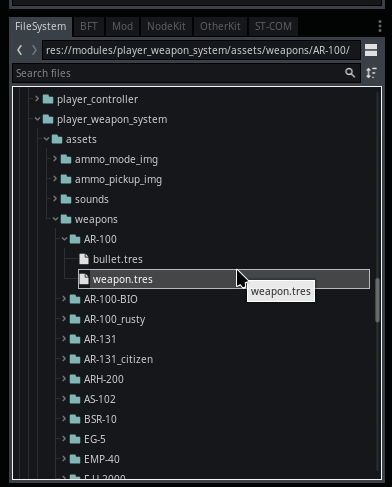

Module: player_weapon_system
Documentation last edited: October 23, 2025 at 14:33 UTC
Description
So welcome to the factory of MURDER muahaha. This module implements weapons that can be used by the player. That's gonna be a lot of damage.
Script Structure
.
├── weapon.gd
├── weapons
│ ├── firearm_bio_weapon.gd
│ ├── firearm_electro_weapon.gd
│ ├── firearm_flash_weapon.gd
│ ├── firearm_weapon.gd
│ ├── grenade_weapon.gd
│ ├── item.gd
│ ├── item_medical.gd
│ ├── melee_pickaxe_weapon.gd
│ └── melee_weapon.gd
└── weapon_system.gd
Weapon System Main Script
"./weapon_system.gd"
This is the heart of this module. It takes all the data from
"res://modules/player_weapon_system/assets/weapons/"
and turns it into factory of killings, oh yeah. This system contains a primary, secondary, melee, grenade weapons and a usable item. It does the following:
- Being an inventory for weapons of course.
- Dynamically loads data from
PlayerWeapon
-extended files.
- Switches weapons with animation transitions.
- Keeps inventory persistent across checkpoints.
- Handles
PlayerWeapon
, accepts inputs, calls appropriate functions.
- Handles some grenade-specific logic with
PlayerGrenadeWeapon
to support fast grenade throws.
- Implements ammo pickup system.
- Does some HUD integration.
- Implements weapon pickup/drop system with
LocationProp
.
In other words it is some kind of sophisticated duct tape for all the weapons so they would be easier to manage and extend. That's what you need to know :)
Weapon Base Class
"./weapon.gd"
As it says, this is a base class for all the weapons in the game. It provides a set of basic functionality needed to make a weapon. Please be advised that weapons in this game are extending
Resource
therefore the system isn't
"scene-based"
, but it is
"resource-based"
instead. All weapons are resources that has to extend
PlayerWeapon
and be stored in a unique folder at
"res://modules/player_weapon_system/assets/weapons/"
.
Template
# Your player weapon template code
extends PlayerWeapon
class_name PlayerYourWeaponNameHere
# Overridable method for weapon-specific initialization
func custom_load_initialize() ->
void:
pass
# Called when weapon is being hidden
func on_hide() ->
void:
pass
# Called when weapon is being equipped
func on_take() ->
void:
pass
# Called when shoot animation hits impact point
func on_shoot() ->
void:
pass
# Overridable initialization method
func custom_initialize() ->
void:
pass
# Base firing method to be overridden
func fire(origin: Vector3, forward: Vector3, is_first = false) ->
void:
pass
# Initiates reload sequence
func reload() ->
void:
pass
# Called when ammo is picked up
func on_ammo_pickup(multiplier = 1.0) ->
void:
pass
# Called when grenade launcher is activated
func on_grenade_launcher():
pass
# Called when ammo mode is switched
func on_ammo_mode_switch():
pass
# Called when weapon is being removed
func on_remove() ->
void:
pass
# Overridable update method
func custom_update(delta: float) ->
void:
pass
# Overridable physics process method
func custom_update_process(delta: float) ->
void:
pass
# Overridable location change handler
func on_location_change_custom():
pass
Weapons
"./weapons/"
There are already some weapon classes created for this game, they are stored in this folder.
PlayerFirearmWeapon
- a basic firearm implementation that includes all kinds of stuff like recoil, spread, damage control, etc. If you want to make a gun, most likely this resource is your way to go.
PlayerFirearmElectroWeapon
- extension of firearms that create an electro-explosion on hitting anything.
PlayerFirearmFlashWeapon
- extension of firearms that create a flashbang on hitting anything.
PlayerFirearmBioWeapon
- extension of firearms that create a meaty explosion on hitting a character.
PlayerAnimatedItem
- a base class for animated items that you can use and then switch back to normal weapons.
PlayerAnimatedItemMedical
- a medical item that extends animated items to show use of medicals.
PlayerMeleeWeapon
- a basic melee implementation.
PlayerMeleePickaxeWeapon
- in Zone-3A I wanted to make some kind of Minecraft bullshit, but it is kinda unused now.
How to make a new weapon

0. Create a new folder at
"res://modules/player_weapon_system/assets/weapons/"
- The folder's name is the weapon class name, remember that.
1. Create a
"weapon.tres"
file, pick a desired weapon resource type.
2. Configure, tada, here's your weapon.
If you want to make unique visuals, you need to make a new viewmodel, you can read about that in
"viewmodel"
module page
General Information
Root directories list
assets, docs, src
Nodes
None
Classes
Resources
PlayerWeapon
PlayerFirearmElectroWeapon
PlayerAnimatedItemMedical
PlayerFirearmFlashWeapon
PlayerMeleePickaxeWeapon
PlayerFirearmBioWeapon
PlayerGrenadeWeapon
PlayerFirearmWeapon
PlayerAnimatedItem
PlayerMeleeWeapon
Other Scripts
None